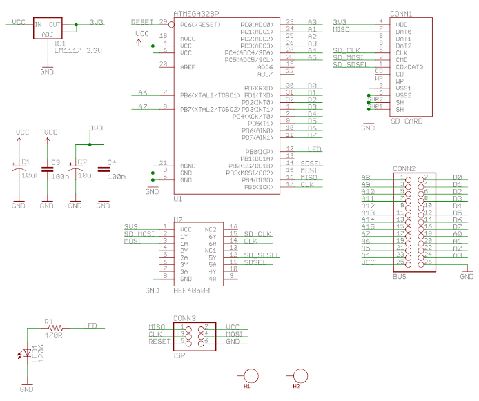

Проект на основе ATMEGA328P и адаптера SD-карточки:
https://github.com/andykarpov/radio-86rk-sdcard
Для работы, на SD-карточке сделан каталог /BOOT, в котором должны лежать три файла:
Схема:

Данное устройство подходит только для ПЭВМ "Радио-86РК", и не подходит для ПЭВМ "Микроша", так как выполнение программы, расположенной в этом устройстве возможно только с помощью директивы R:
R0,100
G
Директива R - это директива копирования данных из квази-диска в оперативную память компьютера. Однако, директивы R нет в мониторе ПЭВМ "Микроша". Поэтому данное устройство без модификации Монитора Микроши работать не будет. Модифицированный монитор для Микроши, в котором есть директива R, вроде как встречается на просторах Интернета. Однако заставлять пользователей Микроши вносить изменения в компьютер, чтобы заработало подключаемое устройство - это весьма непрактичное занятие.
Кстати, в Мониторе Радио-86РК имеются директивы X и U, которых так же нет в мониторе Микроши.